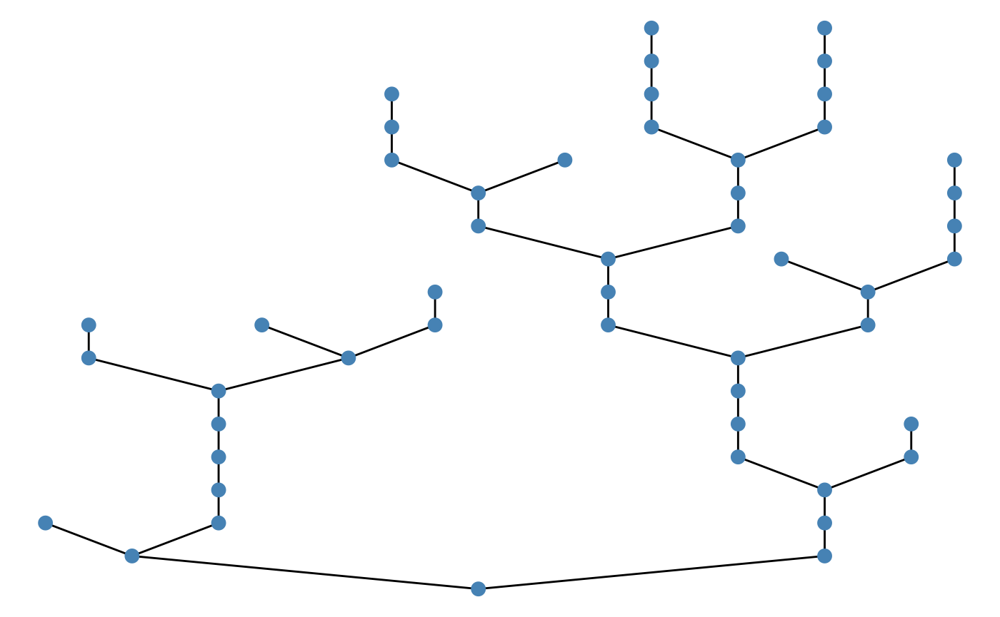
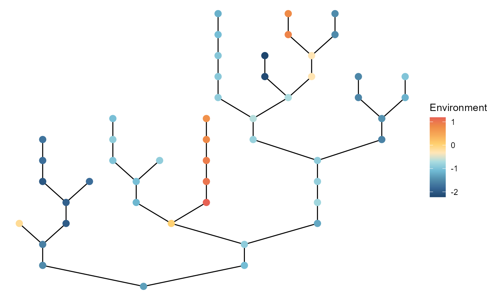

ggbrnet
ggbrnet.RmdBasic usage
ggbrnet() is a wrapper of ggraph functions for easy visualization of a network produced by brnet() .
Quick start
ggbrnet() takes return values of brnet(), adjacency_matrix and df_patch. By default, it colors patches based on environmental values df_patch$environment:

Patch color
Arguments: patch_color
Users can change how they color patches by specifying patch_color. Default is env referring to the environment column in patch_attr argument. Another option is disturb referring to the disturbance column:
# patch ID
ggbrnet(adjacency_matrix = x$adjacency_matrix,
patch_attr = x$df_patch,
patch_color = "disturb")
If patch_color is neither env or disturb, the function takes it as an ordinary color name, for example:
# patch ID
ggbrnet(adjacency_matrix = x$adjacency_matrix,
patch_attr = x$df_patch,
patch_color = "salmon")
Patch label
Arguments: patch_label
Users may add patch labels using the argument patch_label:
# patch ID
ggbrnet(adjacency_matrix = x$adjacency_matrix,
patch_attr = x$df_patch,
patch_label = "patch")
# branch ID
ggbrnet(adjacency_matrix = x$adjacency_matrix,
patch_attr = x$df_patch,
patch_label = "branch")
# number of upstream contributing patches
ggbrnet(adjacency_matrix = x$adjacency_matrix,
patch_attr = x$df_patch,
patch_label = "n_upstream")
Users may specify additional arguments passed to ggraph::geom_node_label() to tweak details, for example:
# branch ID adjust label position
ggbrnet(adjacency_matrix = x$adjacency_matrix,
patch_attr = x$df_patch,
patch_label = "branch",
nudge_x = 0.2)
Patch size
To change patch size, specify patch_size:
ggbrnet(adjacency_matrix = x$adjacency_matrix,
patch_attr = x$df_patch,
patch_size = 1)